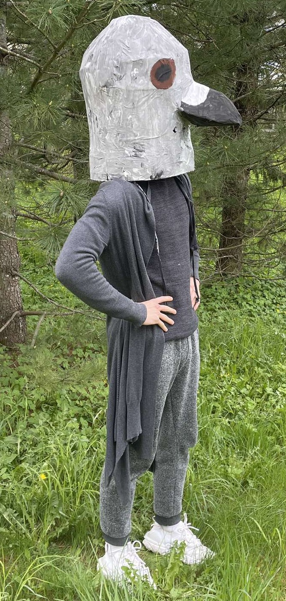
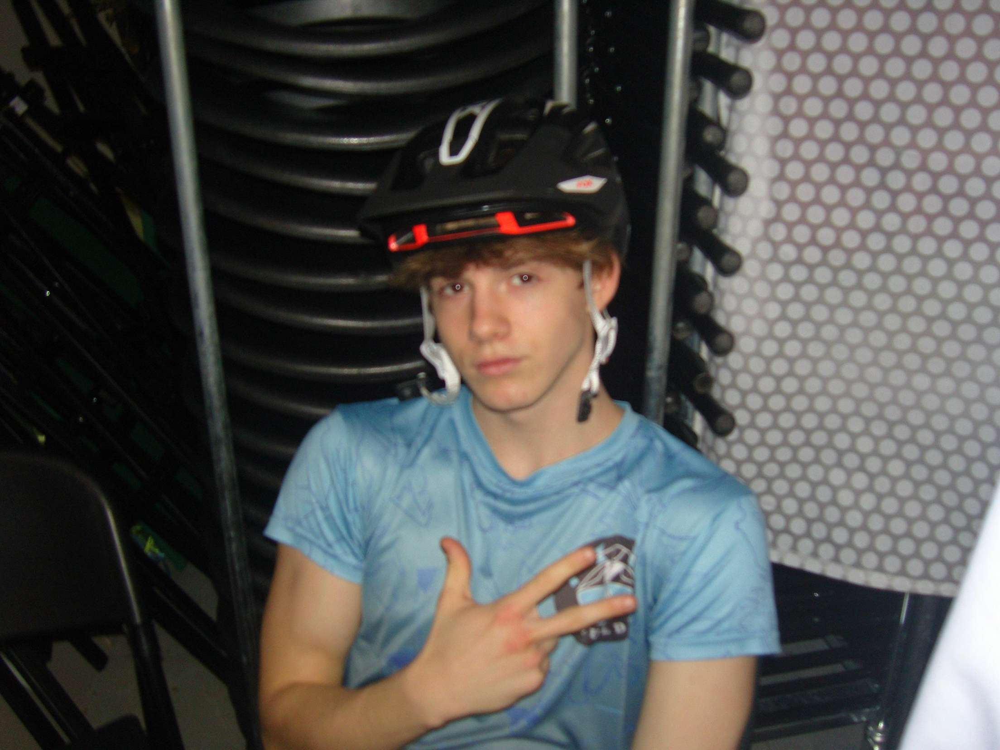

Kas slepjas zem noslēpumainās baloža maskas?
Kurš to būtu domājis, ka zem baloža maskas slēpjas vēl viens balodis?
Toties šis balodis nav tikai parasts balodis, bet gan Niks Balodis.
Kurš to būtu domājis, ka zem baloža maskas slēpjas vēl viens balodis?
Toties šis balodis nav tikai parasts balodis, bet gan Niks Balodis.
Niks Balodis ir 2024./2025. mācību gada 10.d klases skolnieks, Radošo Industriju novirzienā. Viņš ir autors un modelis šim izcilajam dizainam, kas apkopo tērpa mērķi – radīt dizainu, kas mazina piesārņojumu.
Viņš piedalās arī tautas dejas kolektīva "Vizbulīte" sastāvā. Brīvo laiku pavada spēlējot volejbolu un apmeklējot spēka zāli.
Viņš piedalās arī tautas dejas kolektīva "Vizbulīte" sastāvā. Brīvo laiku pavada spēlējot volejbolu un apmeklējot spēka zāli.
